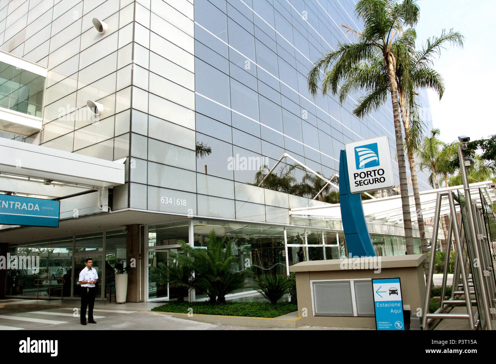

A Porto Seguro é a terceira maior seguradora brasileira do Brasil , foi fundada em 1945 e conta com mais de 13.000 funcionários. A empresa opera por meio de suas subsidiárias no Brasil e no Uruguai.
Sua sede fica em São Paulo.
A empresa oferece seguros de automóveis, residenciais, saúde, vida e empresariais, e o consórcio também oferece seguros de automóveis e residenciais, previdência privada, capitalização e outros serviços financeiros.
A Porto Seguro concorre com Bradesco Seguros , BB Seguridade, SulAmérica , Mapfre , Zurich Insurance Group e outras seguradoras e resseguradoras no Brasil.
Endereço: R. Guaianases, 1238 - Campos Elíseos, São Paulo - SP, 01204-000

contato:
0800 727 2766
(11) 3337-6786